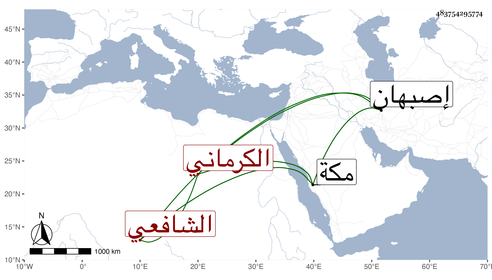

0902Sakhawi.DawLamic.ITO20230111-ara1.EIS1600.483754295774
Biography ID: 483754295774
555
فتح الله بن فرج الله بن حسن شاه بن إبراهيم البرهان أبو الخير بن الضياء أبي القسم بن العلاء بن البرهان الكرهلي نسبة لكره قرية من أصبهان الكرماني المولد والدار الشافعي نزيل مكة ، ممن سمع مني أيضا بمكة .
